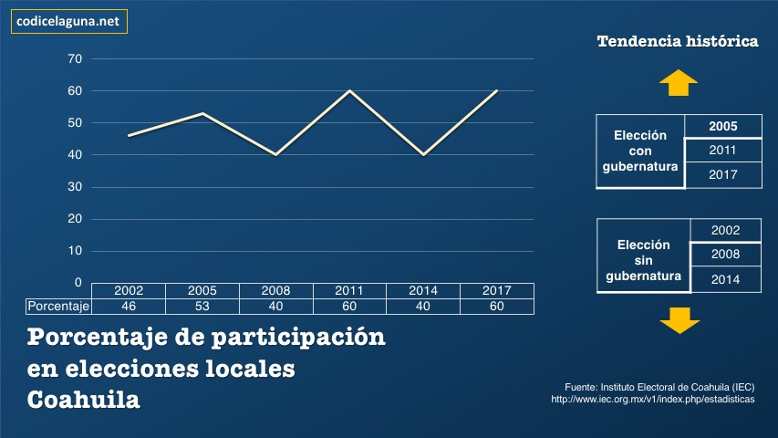
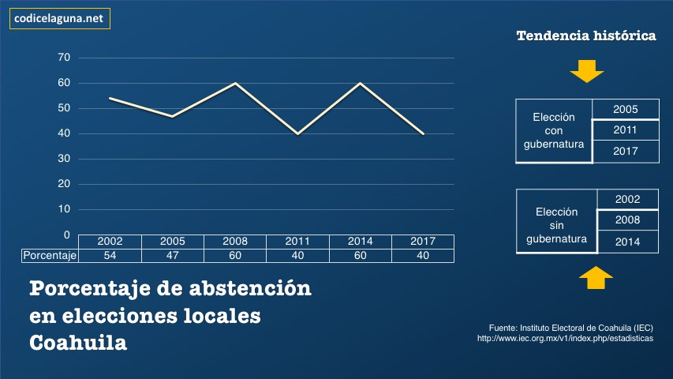
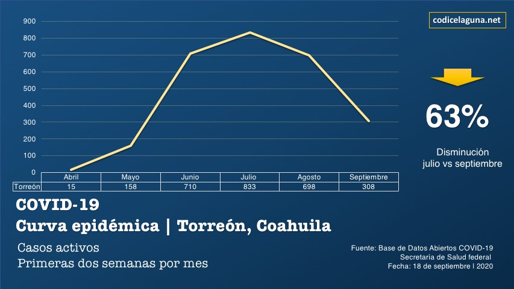
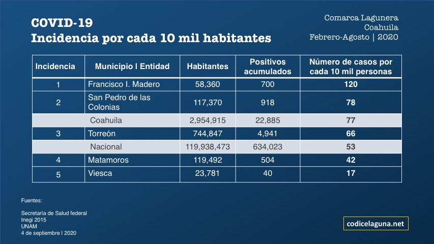

El 17 de marzo de 2020, la Junta General Ejecutiva (JGE) del Instituto Nacional Electoral aprobó mediante Acuerdo INE/JGE34/2020, las medidas preventivas y de actuación, con motivo de la pandemia derivada del COVID-19.
Por su parte, el Consejo General del INE determinó suspender temporalmente el desarrollo de los procesos electorales locales en Coahuila e Hidalgo, con motivo de la pandemia del Covid-19, generada por el virus SARS-CoV-2, lo cual incluye las tareas de integración de mesas directivas de casilla, capacitación y asistencia electoral. También acordaron que, una vez restablecidas las condiciones de seguridad sanitaria, se reanudarían las actividades de los procesos electorales locales y se determinaría la fecha de la Jornada Electoral. La Dirección Ejecutiva de Capacitación y Educación Cívica (DECEyEC) y la Dirección Ejecutiva de Organización Electoral (DEOE) plantearon una serie de medidas y recomendaciones que parten de las consideraciones que han establecido las autoridades de salud federales y estatales, pero que se enfocan al desarrollo de las tareas de asistencia electoral, integración de mesas directivas de casilla y capacitación electoral en las diferentes etapas que falta desarrollar durante el Proceso Electoral Local 2019-2020.
A partir del 24 de junio se implementó el Protocolo para el regreso a las actividades presenciales en el Instituto Nacional Electoral y la Estrategia de operación de Módulos de Atención Ciudadana durante la emergencia sanitaria por COVID-19, ambos instrumentos aprobados por la Junta General Ejecutiva de este Instituto en esa misma fecha y los cuales contienen diversas medidas tales como: el regreso paulatino y progresivo a las actividades presenciales en las oficinas, la protección de aquellas personas en situación de riesgo permitiendo que continúen con el trabajo desde sus casas; en actividades presenciales el respeto a la sana distancia, instalación y operación del filtro sanitario con toma de temperatura y nivel de oxígeno, uso obligatorio de cubrebocas para toda persona que ingrese o permanezca en las instalaciones del Instituto, la sanitización de espacios, etc.
Es por eso, que el INE emitió una serie de recomendaciones para que de esa forma, los ciudadanos y ciudadanas de todo el Estado, acudan a emitir su voto confiando en que se tomarán las medidas sanitarias correspondientes:
a). Acudir a la casilla con cubrebocas y, preferentemente, con careta. En el caso de que se presente la o el elector sin cubrebocas, se le proporcionará uno al ingresar a la casilla.
b). Al toser o estornudar, deberán hacerlo cubriendo nariz y boca con el ángulo interno del brazo, o cubriéndose con un pañuelo.
c). Cada elector/a podrá llevar su propio bolígrafo para marcar sus boletas (no usar marcadores de alto grosor ni plumones a base de aceite); con esta medida se trata de reducir que los marcadores de boletas de la casilla sean compartidos por un gran número de personas. No obstante, en cada casilla se dotará de un número adicional de marcadores de boletas.
d). En el caso de las y los ciudadanos que requieran apoyo de un familiar para ejercer su derecho al voto, también deberán portar cubrebocas, así como respetar las indicaciones de sanidad. Por otra parte, se recomienda que no acudan con menores de edad; en caso contrario, no se le prohibirá el ejercicio del sufragio; sin embargo, los menores de edad también deberán portar cubrebocas.
e). Consultar los resultados a través de los difusores del Programa de Resultados Electorales Preliminares (PREP), para reducir la afluencia de la ciudadanía interesada en conocer los resultados, en el sitio donde se instaló la casilla.
f). Al regresar a su domicilio, que apliquen las medidas sanitarias como lavado de manos y otras zonas expuestas, y en su caso desinfección de objetos que hayan llevado con ellos.
Por su parte, el Lic. José Carlos Nava, Maestro de la Facultad de Ciencias Políticas y Sociales perteneciente a la Universidad Autónoma de Coahuila, da su punto de vista sobre las próximas elecciones:
“El proceso electoral de Coahuila 2020 para renovar el Congreso enfrenta un reto histórico en el contexto de la pandemia originada por la propagación global del coronavirus SARS-CoV2, causante de la enfermedad respiratoria COVID-19. Esta nueva realidad configura el curso de un periodo de campañas atípico e inédito en la entidad para una elección intermedia (o huérfana), debido a la emergencia sanitaria.
Sin duda, dicho reto se encuentra directamente ligado a superar el bajo nivel de participación ciudadana frente a procesos que implican elegir legisladores. Ha predominado el abstencionismo. Ahora, el reto se vuelve superlativo por las restricciones de movilidad en la ocupación del espacio público.
De esta manera, la jornada electoral fijada para el próximo 18 de octubre donde estarán en juego 25 diputaciones locales, 16 de mayoría relativa y 9 de representación proporcional, se sitúa en un escenario caracterizado por la complejidad.
En consecuencia, surge una pregunta obvia: ¿cómo es que la pandemia influirá en el comportamiento de los electores? Y desde este punto de partida, sería inconveniente prefigurar una debacle en términos de participación. Por el contrario, el presente planteamiento apuesta por una ponderación de contraste: incentivo o desaliento.
1) La pandemia como incentivo. En concreto tiene que ver con la evaluación favorable, neutra o desfavorable, de las intervenciones de gobierno instrumentadas para mitigar las cadenas masivas de contagio; tomando en cuenta la fuente político-partidista de dichas políticas públicas a nivel federal, estatal o municipal. En este aspecto, es altamente probable que los electores agreguen a la orientación del sufragio el factor de aprobación o desaprobación de la autoridad en turno, colocando en su mira la identidad partidista en cuestión.
2) La pandemia como factor de desaliento. Partiendo de este punto de vista, el factor pandemia aparece como variable que podría jugar en contra de la participación. Ello, considerando la existencia de un entorno de seguridad adverso, donde la percepción predominante acentuaría la noción de condiciones de riesgo para la salud al momento de acudir a las urnas.
En México, a la problemática sanitaria de coronavirus en curso hay agregar la concurrencia del dengue y el periodo de influenza estacional. Para el caso de Coahuila y su jornada electoral del próximo 18 de octubre habrá que tomar en cuenta esta condición inédita de entorno. De tal manera que a ese punto futuro de llegada resulta necesario incorporar la variable del semáforo de riesgo, toda vez que al menos hasta agosto la entidad se mantuvo por encima de la tasa nacional de incidencia de COVID-19. Por lo pronto, tal como puede observarse, este escenario nos presenta una realidad sumamente compleja e impredecible.




Datos:
El próximo 18 de octubre, las y los coahuilenses podrán votar a través de la Urna Electrónica en 54 de las 3,828 casillas totales que instalará el INE en Coahuila. Dos millones 227 mil 413 ciudadanos podrán votar.
Fuentes:
Modelo Integral de Atención Sanitaria para los Procesos Electorales Locales de Coahuila e Hidalgo, INE 2020.
Protocolo de atención sanitaria y protección a la salud, para la operación de las casillas el día de la Jornada Electoral Proceso Electoral 2019-2020 Coahuila e Hidalgo.
Protocolo específico para las y los Supervisores Electorales y Capacitadores Asistentes Electorales en las actividades de integración de mesas directivas de casilla y capacitación electoral durante el PEL 2019-2020, en el marco de la contingencia sanitaria provocada por el COVID-19 (Coronavirus).